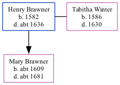

Henry Brawner, the 10 times great-grandfather of Nigel Horne, was born in Willesborough, Kent, England in 1582 and married Tabitha Winter (with whom he had 1 child, Mary, ) in Willesborough on 27 Apr 16072.
He died c. 1636 in Willesborough1 and was buried in Hinxhill, Kent, England on 19 Mar 16361.
England, Select Deaths and Burials, 1538-1991 Ancestry.com Operations, Inc.
Kent, England, Extracted Parish Records Online publication - Provo, UT, USA: Ancestry.com Operations Inc, 2001.Original data - Electronic databases created from various publications of parish and probate records.Original data: Electronic databases created from various publications of parish and
Family Tree

Map
Generated by ged2site. Last updated on Feb 19, 2025